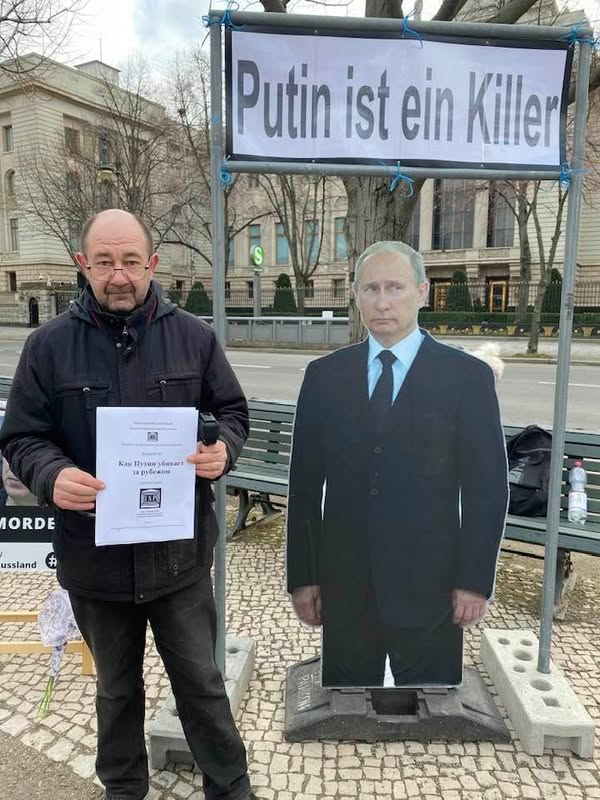
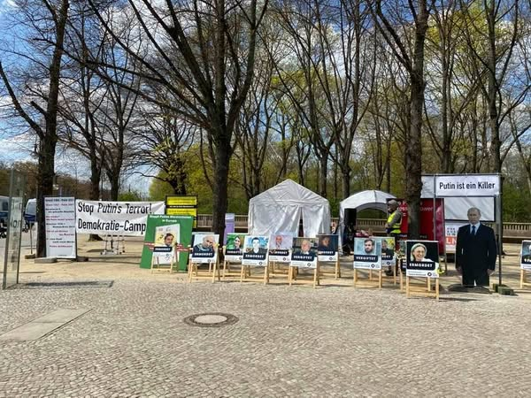
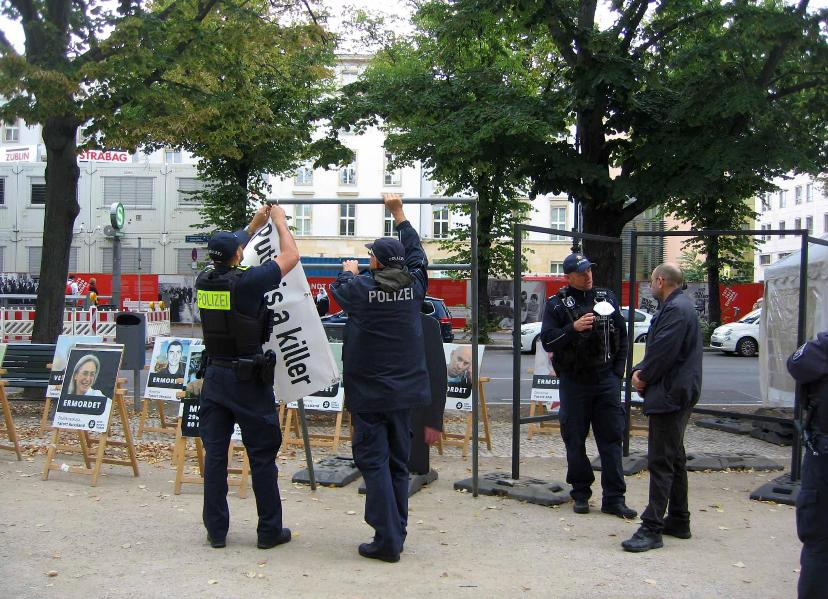
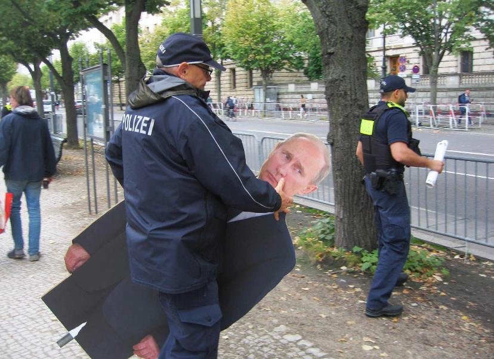
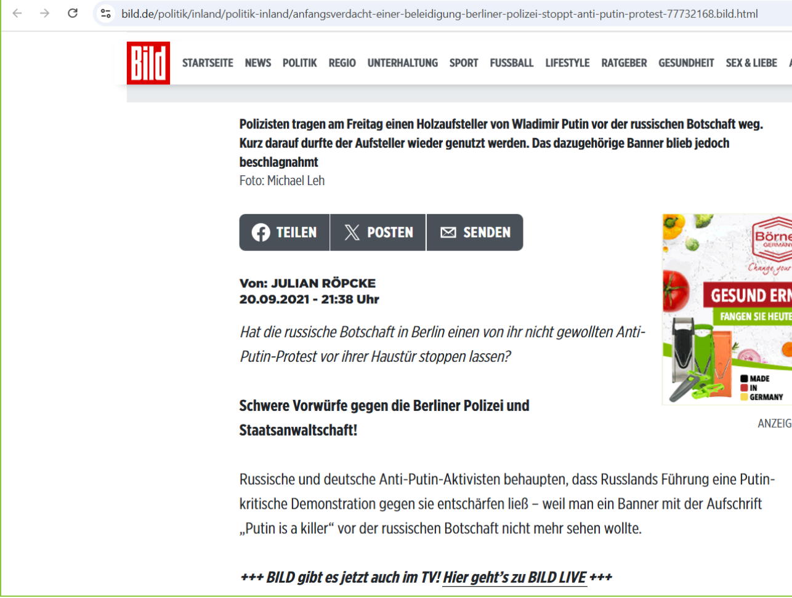

Содержание
Друзья!
Сейчас я расскажу вам о событиях, которые предшествовали моему аресту по обвинению в якобы совершённом покушении на убийство. Речь пойдёт о том, как я «оскорбил» берлинскую прокуратуру и нарушил планы путинской администрации. И что из этого вышло?
Эта история состоит из 5 частей:
- О значении выборов в путинской России и о том, можно ли за 400 евро помешать фальсификации российских выборов в Германии.
- О фигуре Путина и надписи «Putin is a Killer».
- Детектив о попытке срыва демонстрации 17 сентября 2021 года.
- Выводы.
- Связь с покушением на убийство.
Часть 1: Значение выборов в России
19 сентября 2021 года в России прошли выборы в Государственную думу. Все жители России и постсоветских стран, хоть немного интересующиеся политикой, прекрасно знают: результаты полностью фальсифицированы, неудобные кандидаты не допускаются к выборам, итоги голосования подделываются.

Поэтому я с 17 по 20 сентября 2021 года организовал круглосуточную демонстрацию перед входом в российское посольство в Берлине. Там я разместил большие стенды с историями о недопущении кандидатов на немецком и английском языках.
Часть 2: Фигура Путина и надпись «Putin is a Killer»


Впервые я изготовил фанерного Путина в августе/сентябре 2020 года, когда организовывал первую демонстрацию у российского посольства. Баннер с надписью «Putin is a Killer» появился впервые 27 февраля 2021 года — в годовщину убийства Бориса Немцова.
С 9 апреля по 9 мая 2021 года мы организовали круглосуточный лагерь у Бранденбургских ворот. Путин постоянно стоял в центре на фоне «Аллеи жертв» с надписью «Putin is a Killer». Около 95% прохожих делали селфи — в том числе полицейские.
Часть 3: Детектив — попытка срыва демонстрации 17 сентября 2021 года
Дело: (348Gs)231 Js 3707/21 (3115/21)


Утром 17 сентября 2021 года пришёл тот же полицейский, который накануне помог установить «Аллею жертв». Он сказал, что у него плохие новости: оберштаатсанвальт Raupach распорядился немедленно конфисковать фанерного Путина и плакат «Putin is a Killer».
Я предложил нарисовать на плакате кавычки и представить надпись «Putin is a Killer» как цитату Байдена. Полицейский согласился с идеей, но Raupach настоял на немедленной конфискации.
После того как полицейские загрузили плакат в машину, я сказал, что сразу восстановлю надпись — на этот раз с кавычками. Полицейский ответил дословно:
«Отличная идея, тогда я могу проигнорировать распоряжение обергосударственного прокурора Raupach, и всё будет хорошо.»

К счастью для нас, рядом оказался немецкий журналист, который всё снял на видео. 20 сентября 2021 года Юлиан Рёпке в газете BILD опубликовал статью с описанием и фотографиями.
Против меня было возбуждено уголовное дело об оскорблении президента России. Несколько месяцев спустя оно было прекращено по § 170 StPO.
5 октября 2021 года судья д-р Фрике подтвердил законность конфискации плаката «Putin is a Killer». И тот же судья Фрике 14 декабря 2022 года выдал против меня ордер на арест по обвинению в покушении на убийство.
Часть 4: Выводы
Акция проходила в день выборов в Государственную думу России перед российским посольством в Берлине и доказывала незаконность выборов.
- Администрация Президента России?
- Правительство Германии?
- Другие?
Я на 100% соблюдал законы. Организатором был я и Unkremlin e.V. — германское правительство тем самым было освобождено от какой-либо ответственности.
- Эта акция нанесла вред Германии? — Нет.
- Эта акция была незаконной? — Нет. Дело прекращено.
Часть 5: Связь с покушением на убийство
22 июля 2024 года Дмитрий Баграш был приговорён Земельным судом Берлина к 5 годам и 4 месяцам лишения свободы за покушение на убийство. Приговор не вступил в законную силу.
- Судья д-р Фрике — тот же судья, который в 2021 году подтвердил конфискацию плаката, в 2022 году выдал ордер на арест Баграша.
- Упоминания в ОБСЕ — 24.09.2021 и 08.04.2022 российская делегация прямо назвала Unkremlin e.V. как политически опасную организацию.
- Судья Гросс прямо выразил недовольство антипутинской деятельностью Баграша в ходе судебного процесса.
- Удаление с Facebook — в период с 28.11.2024 по 16.12.2024 были удалены публикации, использованные в суде как доказательства.
Подробнее см. Дело 1 (Уголовное дело) и Анализ (Дело 4).
Оригинальные документы и скачивание
Все оригинальные документы находятся в Google Drive: